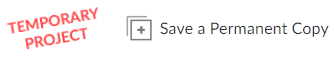

Spatial Data Analysis with R. BayGeo, Spring 2020
Setup
Computer Setup
The workshop includes a good number of hands-on exercises so you’ll need a laptop or desktop computer (Mac or Windows are both fine). As noted below, you can either install RStudio and a bunch of R packages, or run R in a browser using the RStudio Cloud platform (details below). In either case, a mouse is recommended for navigating the interactive maps we’ll be creating.
RStudio is not a terribly resource intensive program, however if your laptop is old and slow consider using the RStudio Cloud service.
R
There are two options for running R which will be needed throughout the workshop.
1. RStudio Cloud
A good way to complete the workshop exercises is to use RStudio Cloud. RStudio Cloud is a virtual environment that allows you to run R in a browser so you don’t have to install any software or data. It functions nearly identical to RStudio desktop, and works pretty well as long as you have reasonaly good internet connection. Using RStudio Cloud requires setting up an account (free).
To use RStudio Cloud for the workshop, login to your account and then click on this link: https://rstudio.cloud/project/587922. This will open a RStudio Cloud project with all the required packages and data ready to go (you’ll get the scripts from the slide deck). After the project opens, click the ‘Save a Permanent Copy’ button which will make a copy of the project in your own workspace.

2. Using your own computer
Alternately, you can run R on your own computer (R is cross-platform, so Windows, Mac, or Linux should all work). R and RStudio are not large programs, and 2Gb or more of free HD space (if your laptop is not up to snuff consider using the RStudio Cloud option instead. Please install R, RStudio, and a number of packages as described below.
a. Download and install R (64-bit):
Note: If you already have R installed, please make sure you have version 3.6 or later. If not, please update R by downloading the latest version above and (re)installing it.
b. Download and install RStudio Desktop
Download the version for your operating system. The free version is fine.
c. Install Packages
R packages are like add-ins - they expand the capabilities of R. To install the packages we’ll be using for the workshop, click the little copy button in the green text box below, then open RStudio and paste the commands into the console and hit enter. An internet connection is required.
pkgs_req <- c("sp", "sf", "tmap", "tmaptools", "leaflet", "ggmap", "maptools", "RColorBrewer", "raster", "maps", "zipcode", "tidyverse", "jsonlite", "rasterVis", "GISTools", "adehabitatHR", "nngeo", "lwgeom", "devtools", "RStoolbox", "conflicted", "tigris", "tidycensus", "stars")
pkgs_missing <- pkgs_req[!(pkgs_req %in% installed.packages()[,"Package"])]
if (length(pkgs_missing)) install.packages(pkgs_missing, dependencies=TRUE)If you are prompted by the question, ‘Do you want to install from sources the package which needs compilation?’, select ‘No’.
d. Download workshop materials
The workshop materials are on GitHub. Please download the workshop materials by visiting the site https://github.com/ajlyons/rspatial_bgs20, and clicking the green download button. Unzip the file to your hard drive.
e. Set the working directory in RStudio
Set the working directory to the ‘docs’ folder in the workshop materials. An easy way to set the working directory is to goto the RStudio menu >> Session >> Set Working Directory >> Choose Directory. Then select the ‘docs’ folder that you just downloaded.
To verify the working directory is set correctly, copy-paste the following lines of code into the RStudio Console. If you see an image, your RStudio session is set up correctly.
f. Open the slides
Go to https://ajlyons.github.io/rspatial_bgs20/ to open the table of contents for the slides and exercises. (You may also double-click index.html in the ‘docs’ folder).
Slides and Exercises
Most of the exercises will be in the slides. Typically you’ll copy-paste starter code, and/or question prompts, from your browser into a R script, and then keep going from there.
Zoom Setup
This workshop will be taught entirely online using the Zoom platform (the link will be sent you via email, we’ll use the same link for all sessions).
Workspace Setup
Try to find a spot which is comfortable and relatively free from distractions and background noise. A little background noise is not a problem as you can mute yourself, but consider a pair of headphones to minimize distractions.
Ergonomics are important! If you’ve ever tried to work on a laptop while sitting on a couch for 4 hours, it isn’t ideal. We will of course take breaks.
Setting up Zoom
Please install the Zoom client on your laptop, which you can download here. If you’ve used Zoom before, and you see Zoom in the Start Menu (Windows) or Finder (Mac), then you already have the client. Please make sure you have the latest version (4.6.8), as some of the buttons and features have changed.
A Zoom account is not required. A webcam is nice but not required.
Viewing RStudio and Zoom Simultaneously
A second screen is helpful but not essential, so you can view the instructor / slides in one window, and work on RStudio in the other. If you have an external monitor for your laptop / computer, you’re all set. You can put Zoom on one monitor and RStudio on the other.
If you don’t have a second monitor, a tablet would work fine for watching the slides / presentation. Zoom is also available as an app for phones and tablets. Note however if you watch the slides on a tablet, you should also have Zoom running on your laptop so you can share your screen with the instructor, click on links in the chat window, etc. In that scenario, you’ll be logged into the Zoom meeting on two different devices, which is totally fine (but only join the audio on one of the devices, otherwise you’ll get echo!).
Single Screen Options
If a second screen isn’t possible, you can also arrange your windows so that you see both RStudio and Zoom (see below for example). You can devote the entire width of the Zoom window to the screen share by going to ‘View Options’ and making sure side-by-side mode is turned off.

arranging RStudio and Zoom side-by-side on a single monitor on Windows
Zoom unfortunately does not have an ‘always on top’ mode, but you can keep the Zoom client on top by using a 3rd party utility like DeskPins.
Sharing Your Screen
You are encouraged to Share your R application window (i.e. RStudio or a browser window if you’re using RStudio Cloud) during the exercises, so the instructor can see how you’re doing and/or answer questions. Click the ‘Share Screen’ button on Zoom, and select your R window. (Note: please don’t share the entire screen to avoid accidentally sharing other windows!)

Audio
If you find the audio is garbled, you can dial-in with a phone. In that case, you should disconnect from the the audio on your laptop or tablet (to prevent echo).
Muting and unmuting yourself are essential skills for Zoom. It’s generally good practice to stay muted until you have something to say.
If you’re using the Zoom app on Windows, click the microphone button. If you’re using the Zoom app for phones and tablets, tap the middle of the screen to make the controls visible.
If you dial-in on a phone, you can use the ‘mute’ button on your phone app, or dial *6 to mute or unmute yourself.